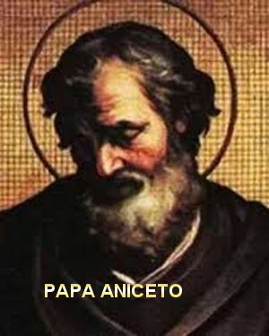
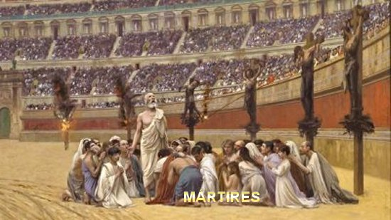
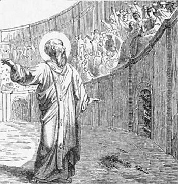
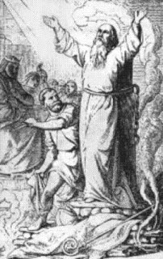

MISSÃO CUMPRIDA INTEGRALMENTE

VISITA A ROMA
O Bispo Policarpo foi a Roma entre os anos 155-156 d.C. para visitar o Papa Aniceto (155-166). Foi uma visita além de fraterna, pois eles já se conheciam e cultivavam certa amizade. Todavia, para Policarpo a viagem também tinha o objetivo maior de conversar com o Papa a respeito de “certas coisas” e das diferenças de datas que existiam nas comemorações da Páscoa na Ásia e em Roma. O Bispo Irineu de Lyon, que foi Discípulo de Policarpo, afirma que sobre as “certas coisas” os dois Bispos logo chegaram rapidamente a um acordo. Com relação à data de comemoração da Páscoa, cada um continuou aderindo às próprias tradições, sem, contudo, quebrar a comunhão existente, ou seja, a amizade e o bom entendimento entre eles e entre a Igreja da Ásia e o Vaticano. Assim, Policarpo seguiu a prática oriental de celebrar a Páscoa no dia 14 de Nisan, o dia da Pessach Judaica, sem se preocupar em qual dia da semana pelo calendário ia cair a Páscoa (segunda-feira, terça... domingo). Enquanto em Roma, a Páscoa sempre foi celebrada no domingo da Ressurreição. Como testemunho de que eles continuaram amigos e verdadeiros cristãos, é sem dúvida, a conciliadora atitude do Papa Aniceto: mantendo a permissão dada a Igreja da Ásia de celebrar a Sagrada Eucaristia.
MARTÍRIO DE SÃO POLICARPO
A perseguição aos cristãos pelos Imperadores Romanos continuava firme e avassaladora, não escapava velho, mulher e criança. Muitos morreram nas arenas construídas em diversas cidades onde eram comidos pelas feras; outros amarrados em postes tinham o corpo embebido em betume, repletos de dores morriam queimados gritando e chorando; alguns eram enforcados. Mas havia aqueles que morriam na fogueira, na guilhotina ou assassinados, pronunciando o nome Divino de JESUS ou da SANTÍSSIMA VIRGEM MARIA, nossa querida e amada MÃE.

Policarpo foi persuadido por seus amigos a deixar a cidade (Esmirna) e se esconder numa fazenda. Ouvindo a consciência e o “bom senso” ele foi e passou escondido durante uma semana em orações. Certo dia em que rezava caiu em transe. Isto aconteceu três dias antes da sua prisão. Naquela espécie de transe viu seu travesseiro queimando em chamas e entendeu o recado. Assim que se encontrou com os companheiros contou o pesadelo e lhes disse: “Deve estar marcado que eu seja queimado vivo”. Os acompanhantes em silêncio e pensativos, logo a seguir o acompanharam numa oração.
Quando ele soube que
os seus perseguidores já estavam em seu caminho, foi aconselhado pelos
amigos a se ocultar em outra fazenda. E assim na sequência dos dias,
quando os perseguidores foram procurá-lo, não o encontraram. Eles com
muita desconfiança pegaram dois meninos escravos e os submeteram a pesado
interrogatório, e inclusive, os ameaçaram de tortura. Um deles traiu e contou
onde ficava o novo lugar de ocultação do Bispo Policarpo. Herodes, que era o chefe da
polícia, enviou um grupo de homens para prendê-lo na noite de sexta-feira. A
fuga de Policarpo ainda era possível, mas o velho recusou-se a fugir, dizendo:
“Chega de fugir: seja feita
a Vontade de DEUS”. Nesse momento chegaram
os perseguidores. Ele que estava na parte superior da casa desceu para atender os homens.
Conversou afavelmente com eles, e ordenou que trouxessem comida para todos. Enquanto comiam,
ele se afastou para a varanda ao lado da sala e orou olhando para o Céu: "SENHOR DEUS, o SENHOR conhece os meus passos,
sabe da minha sinceridade e da grandeza do meu amor. Aqui estou pronto a seguir o caminho
que a 
O chefe de policia Herodes e o seu pai Nicetas, vinham numa carruagem e os encontraram na estrada, pararam e deram ordem para Policarpo entrar na carruagem. Enquanto seguiam, os perseguidores caminhavam atrás. Herodes, querendo mostrar amizade tentou convencer o Bispo de salvar a sua vida. E com este pensamento, pai e filho pressionaram Policarpo com promessas e benefícios. Ele permaneceu mudo e de cabeça baixa. De momento em momento, com o rosto sério levantava o olhar e fixava em um dos dois, e depois abaixava novamente. Eles então propuseram: “Que problema há em dizer César é o senhor e acender incenso em homenagem dele?”E colocaram uma porção de incenso numa jarra nas mãos dele. Ele agradeceu, mas devolveu dizendo aos policiais: “Não quero fazer isso”. Eles então num gesto ligeiro o empurraram para fora da carruagem com tanta força que ele machucou a canela. A carruagem seguiu com os dois policiais e os perseguidores que vinham atrás, levaram Policarpo a pé para a Arena.
À medida que a notícia da prisão do Bispo circulava pela cidade, muita gente caminhou para a Arena, porque queriam assistir a morte dele. Quando Policarpo chegou com os perseguidores, a Arena já estava cheia. O povo gritava e dizia imprecações. Ele andando lentamente, ouviu uma voz forte vinda do Céu:"Seja corajoso Policarpo, mostre que tem fé”. Ninguém do povo ouviu aquela voz, só os cristãos ouviram e respeitaram. Ele caminhando conduzido pelos perseguidores chegou à presença do Procónsul.
DIANTE DO PROCÓNSUL
Ele logo quis cativar a amizade do Bispo:
— “Respeito a sua idade, velho homem”— Disse o Procónsul de modo bem fraternal. E depois, aparentando uma fisionomia tranquila e implorando, disse:“Jure pela felicidade de César. Diga: Fora com os ateus!”
Com este gesto, o Procónsul tentava demonstrar que desejava salvar a vida de Policarpo, mas era necessário que ele se separasse daqueles camaradas “ateus” (os cristãos). O Bispo que estava de cabeça baixa levantou a face e olhou a multidão zombadora; preferiu permanecer em silêncio.
O Procónsul insistiu:
- “Mude de idéia, diga que César é o senhor”!
O Bispo se manteve firme, de cabeça baixa.
Mas o Procónsul não lhe deu tréguas, e insistiu:
- “Amaldiçoe CRISTO.” “Faça um juramento contra os ateus!” “Eu lhe dou a liberdade imediatamente”.
Policarpo cheio de coragem olhou firme para o Procónsul e disse:
- “Olha, por 86 anos tenho servido a CRISTO, e ELE nunca me fez qualquer mal. Como posso blasfemar contra o meu REI e REDENTOR, AQUELE que verdadeiramente me salvou?”
O Procónsul cheio de ódio mandou lançá-lo as feras. Mas já era tarde, os esportes estavam fechados e as feras enjauladas. Os oficiais lhe avisaram. Então ele decidiu queimá-lo na fogueira. Mandou os seus sequazes comunicar à multidão, que ouviu e vibrou de alegria.

Foi o tempo suficiente para os homens acenderem o fogo, que se alastrou rapidamente e cresceu de maneira impressionante e formou uma espécie de abóboda, mais parecido com a vela de um navio, estufada, inflada pelo vento, sem atingir Policarpo. Aquele fogo imenso se posicionou como um protetor do mártir ao invés de devorá-lo. E aquele gracioso corpo intocável no meio daquela imensa fogueira despertou a atenção de todos, porque era como um pão a ser assado pelo fogo, e um perfume maravilhoso, agradável e desconhecido envolveu a atmosfera local, como se fosse um especial incenso, ou uma essência de perfume puríssimo, que afastava o odor do incêndio e o cheiro das coisas queimadas.
Os carrascos e os capangas auxiliares, presenciando que o fogo não queria consumir o corpo do Bispo, se agitaram e levaram o fato ao conhecimento do Procónsul, que cheio de ódio emitiu a ordem, que logo foi transmitida ao carrasco chefe, de cravar a faca em Policarpo, quantas vezes fossem necessárias, para acabar com a vida dele.
O carrasco veio por traz, fugindo das chamas, e com violência o esfaqueou diversas vezes. O sangue jorrou com tanta força que quase apagou todas as chamas. Então, o carrasco e seus asseclas apressaram-se a jogar mais lenha objetivando consumir o corpo dele. E desse modo, o corpo do Bispo de Esmirna foi queimado.
Os cristãos logo se movimentaram para retirar o que havia restado do corpo do mártir.
Mas o carrasco sugeriu a Nicetas, pai de Herodes, não permitir que aquele resto de corpo fosse entregue aos cristãos, a fim de não acontecer que com aquele corpo do Bispo, os cristãos abandonassem o Corpo de JESUS que não viam, e passassem a cultuar Policarpo. Dizia essas coisas por sugestão insistente dos judeus, que vigiavam todas as cenas. Eles Ignoravam que JESUS era o FILHO de DEUS, e que os cristãos jamais abandonariam CRISTO, que sofreu e morreu na Cruz, pela salvação de toda humanidade, dos inocentes e de todos os pecadores.
Mesmo assim, os carrascos decidiram queimar o resto do corpo de Policarpo. Concluída a queima sobraram somente os ossos, que foram recolhidos pelos cristãos e colocados num lugar conveniente.
O registro histórico foi anotado dizendo que o abençoado Bispo Policarpo foi martirizado no segundo dia do mês de Kanthicus, no sétimo dia antes das Calendas de Março, em um grande sábado às oito horas da noite (20 horas). Antes, ele foi detido por Herodes e conduzido ao Procónsul Statius Quadratus. Esta assinatura dá aos fatos o seguinte desfecho: o martírio ocorreu em um sábado que caiu no dia 23 de fevereiro do ano 155.
Este relato foi repassado às congregações religiosas em todo o mundo. A Igreja valorizou o relato e começou a celebrar a vida e a morte de seus mártires, chegando a coletar seus ossos e outras relíquias, em muitas oportunidades. Assim, no dia 23 de fevereiro em todos os anos, são lembrados e comemorados o “Dia do Nascimento de Policarpo" para a Vida Eterna, no Paraíso Divino. (ou seja, o Dia do seu Martírio)